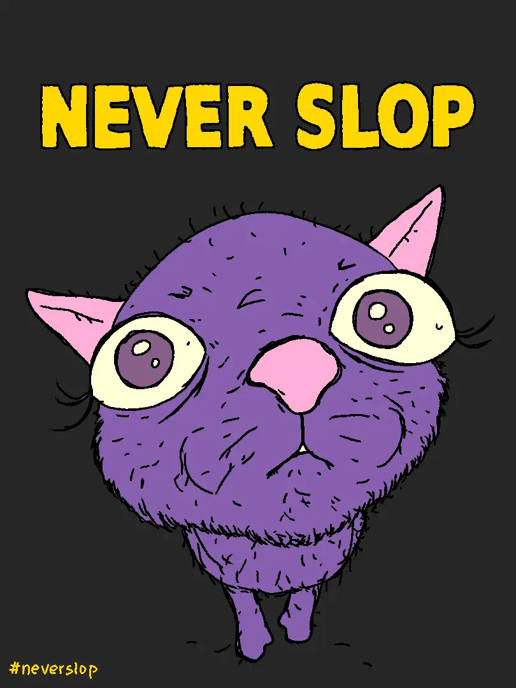

After the course, I believe that I could be a decent web developer, maybe not in 2026 but probably one of the good ones in the good 80s or 90s.
It will be hard to gauge how much time I have spent on this project, but it is probably around 30-40 hours.
The inspiration behind this project was to create a collection of free sources of knowledge for my learning journey. Before starting this project, I had already been finding and learning multiple courses, therefore, with the creation of this website, I will no longer need to search for them and focus on the actual learning. Time spent on scraping the courses manually though was quite a lot, it was also surprisingly fun.
This was a fun project to work on and the result is quite satisfying.
The progress of this project grew exponentially when I succumbed to the temptations of the fruit of sloth created by the evil AI. Specifically when I realized that I didn't need to place every single course article in the container when javascript could do that for me. Still, after the coding session, I acknowledged that I need to know the code to fix the code or else the hallucination will continue without an end.

In my original mockup, I planned to create a searching feature in order to make the web less overwhelming and easier to find desired courses. I have implemented it with the help of Copilot, of course, and it seemingly works like a charm. But I know that when I present you, Mr. Dennis, my creation, I need to be able to explain everything happening inside the code. Therefore, I have chosen to ditch the feature and instead used AI to create the loading courses script with the hope that it will be easier to learn and explain to you. I also installed the font to the file because when taking font from Google links, there's a split second of Italy appearing. For other problems such as grid or css animation, I simply watch Youtube and fix them.

To ask for the bonus points, I believe that the length I went for the additional javascript and the sheer practicality of the site will suffice to acquire many. Perhaps you in the future will return to this website and find it a useful information source, but it will be uncertain that you are teaching me at that time to give me bonus points, so if I can choose, I prefer to have the bonus points at the moment.
While working on the project, I have encountered several problems and difficulties. Though to name it would be a challenge for I am not one of those who can memorize everything. I fix what I can and remove what I can't, that's my philosophy of this project. Perhaps it will change in the future, perchance not.
The accessibility of AI comes with the inflation of outcomes in people's works. To address this problem, the next year's course now has two options. The first one will depend on the integrity, veracy and transparency of the students' vow to not utilize Artifical Intelligence. This one is uncontrollable and uncertain. The second remedy is to embrace LLMs and how to use them responsibly. This though can goes against the traditional approach to learning and teaching, could potentially yield more honest results. Nevertheless, I am still a student and if people could be honest, we would live in an utopia. Still, the inflation situation requires consideration.
It is so fascinating to think that those who utilize this project will later write projects for others because I myself write this project partially from the help of others' earlier projects. My knowledge, drawn from the hands of others, could draw the knowledge of others. This is probably what Feenberg was talking about at SFU, the Holfstadter's strange loop. Maybe there's an exaggeration here, but hey, let a student be proud of themself for a moment.
To determine the truth, a good thought exercise is to excluse those whose nature is uncertain. Those who just read Descartes would claim that you will eventually find that everything other than the self could be the manipulation of the malicious demon. Though if you are taking things further, you will realize that "Cogito ergo sum" is not self-proven. You need to specify a particular self that is being cogito(thinking), and in the case of dream where you can dream of dreaming, the object self is also uncertain. Even though Descartes's point is defeated, I must admit that rationalism is cool.
Other philosophers' way of determining truth is also very interesting. Hume and Locke with empiricist approaches stated that the truth is found through experience and observation. The dialectical or Hegelian way states that the truth is the whole and vice versa. Blackburn did say something more but it's been a while since I read "Think". Talking about book, have you read "The extended mind"?
I appreciate the opportunity to talk about these philosophical concepts because I am a pseudo-intellectual.